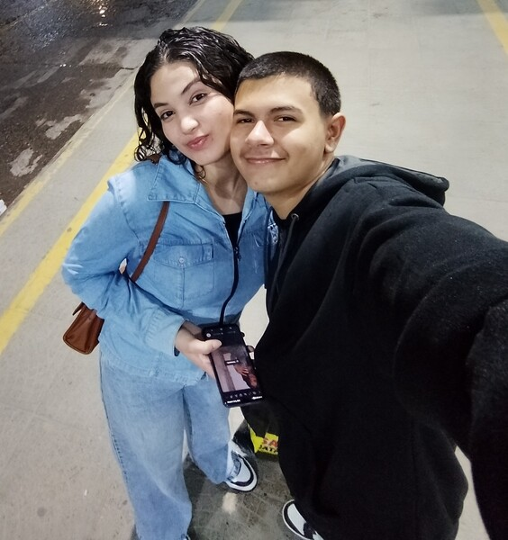

Hoje eu tava aqui, lembrando de como esse ano com você foi especial. Todas aquelas risadas, os abraços que aquecem o coração, até os dias mais tranquilos... tudo virou um pedacinho de mim. Você chegou e trouxe uma energia boa, sabe? Ser seu parceiro, te ver sorrir, sentir que me entende de um jeito único... isso me faz querer ser alguém melhor pra você. Valeu por tudo, de verdade.
Tomara que a gente tenha muitos anos pela frente, cheios de planos, sonhos e esse amor que só vai ficando mais forte. Te amo mais do que as palavras dão conta.
